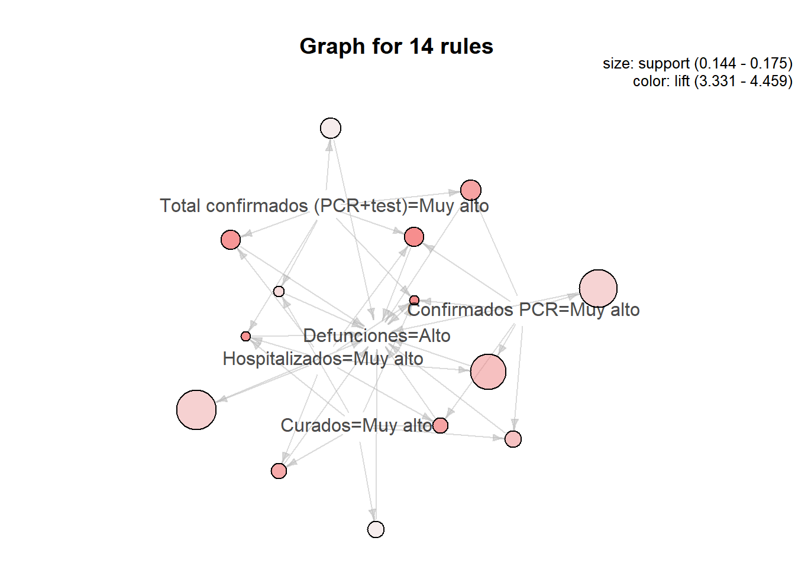

2 Association Rules
## Warning: package 'arules' was built under R version 3.6.3## Warning: package 'arulesViz' was built under R version 3.6.3We split the data of each province from those of Andalusia
datos$`Fecha declaración` <- as.Date(datos$`Fecha declaración`, "%d/%m/%Y")
datos$Territorio <- as.factor(datos$Territorio)
filasandalucia <- filter(datos, Territorio=="Andalucía" )
provincias <- setdiff(datos,filasandalucia)
nrow(provincias)## [1] 687## [1] 87When working with numerical data the first step we have to carry out is to discretize them. The ICU and Death columns are very skewed so we use a different method.
## Min. 1st Qu. Median Mean 3rd Qu. Max.
## 0.00 0.00 0.00 2.23 2.00 59.00## Min. 1st Qu. Median Mean 3rd Qu. Max.
## 0.000 0.000 1.000 4.044 4.000 80.000for(i in c(3,4,6,8)){
provincias[[i]] <- discretize(provincias[[i]],breaks = 4, labels = c("Bajo","Normal","Alto","Muy alto"))
}
provincias$UCI <- ordered(cut(provincias$UCI, c(-1,40,60),
labels = c("Bajo", "Alto")))
provincias$Defunciones <- ordered(cut(provincias$Defunciones, c(-1,5,80),
labels = c("Bajo", "Alto")))
for(i in c(3,4,6,8)){
filasandalucia[[i]] <- discretize(filasandalucia[[i]],breaks = 4, labels = c("Bajo","Normal","Alto","Muy alto"))
}
filasandalucia$UCI <- ordered(cut(filasandalucia$UCI, c(-1,40,60),
labels = c("Bajo", "Alto")))
filasandalucia$Defunciones <- ordered(cut(filasandalucia$Defunciones, c(-1,5,80),
labels = c("Bajo", "Alto")))We apply the apriori algorithm to the provinces dataset
## Apriori
##
## Parameter specification:
## confidence minval smax arem aval originalSupport maxtime support minlen
## 0.5 0.1 1 none FALSE TRUE 5 0.05 2
## maxlen target ext
## 10 rules FALSE
##
## Algorithmic control:
## filter tree heap memopt load sort verbose
## 0.1 TRUE TRUE FALSE TRUE 2 TRUE
##
## Absolute minimum support count: 34
##
## set item appearances ...[0 item(s)] done [0.00s].
## set transactions ...[20 item(s), 687 transaction(s)] done [0.00s].
## sorting and recoding items ... [19 item(s)] done [0.00s].
## creating transaction tree ... done [0.00s].
## checking subsets of size 1 2 3 4 5 6 done [0.00s].
## writing ... [833 rule(s)] done [0.00s].
## creating S4 object ... done [0.00s].## set of 183 rules
##
## rule length distribution (lhs + rhs):sizes
## 2 3 4 5
## 74 79 26 4
##
## Min. 1st Qu. Median Mean 3rd Qu. Max.
## 2.000 2.000 3.000 2.781 3.000 5.000
##
## summary of quality measures:
## support confidence lift count
## Min. :0.05095 Min. :0.5068 Min. :0.9801 Min. : 35.0
## 1st Qu.:0.10771 1st Qu.:0.7183 1st Qu.:2.0605 1st Qu.: 74.0
## Median :0.15138 Median :0.8111 Median :2.9720 Median :104.0
## Mean :0.16187 Mean :0.8128 Mean :2.7265 Mean :111.2
## 3rd Qu.:0.19505 3rd Qu.:0.9606 3rd Qu.:3.5112 3rd Qu.:134.0
## Max. :0.81951 Max. :1.0000 Max. :4.4593 Max. :563.0
##
## mining info:
## data ntransactions support confidence
## provincias[3:length(provincias)] 687 0.05 0.5In principle, we will try to predict the behavior of the Hospitalized variable based on, for example, Total confirmed (PCR + test)
#reglas_3 <- reglas[which(size(reglas)==3)]
#inspect(head(reglas_3))
s1 <- subset(reglas,subset=lhs %pin% "Total confirmados")
inspect(head(s1))## lhs rhs support confidence lift count
## [1] {Confirmados PCR=Muy alto,
## Hospitalizados=Muy alto,
## Curados=Muy alto,
## Total confirmados (PCR+test)=Muy alto} => {Defunciones=Alto} 0.14410480 0.8048780 4.459284 99
## [2] {Confirmados PCR=Muy alto,
## Hospitalizados=Muy alto,
## Total confirmados (PCR+test)=Muy alto} => {Defunciones=Alto} 0.15429403 0.8030303 4.449047 106
## [3] {Hospitalizados=Muy alto,
## Curados=Muy alto,
## Total confirmados (PCR+test)=Muy alto} => {Defunciones=Alto} 0.14410480 0.7983871 4.423322 99
## [4] {Hospitalizados=Muy alto,
## Total confirmados (PCR+test)=Muy alto} => {Defunciones=Alto} 0.15429403 0.7910448 4.382643 106
## [5] {Confirmados PCR=Muy alto,
## Total confirmados (PCR+test)=Muy alto} => {Defunciones=Alto} 0.15574964 0.7697842 4.264853 107
## [6] {Confirmados PCR=Bajo,
## Hospitalizados=Normal,
## Total confirmados (PCR+test)=Bajo} => {Curados=Bajo} 0.06695779 0.9387755 3.956680 46## lhs rhs support confidence lift count
## [1] {Defunciones=Alto,
## Total confirmados (PCR+test)=Muy alto} => {Hospitalizados=Muy alto} 0.15429403 0.9906542 3.889025 106
## [2] {Confirmados PCR=Muy alto,
## Total confirmados (PCR+test)=Muy alto} => {Hospitalizados=Muy alto} 0.19213974 0.9496403 3.728016 132
## [3] {Confirmados PCR=Bajo,
## Total confirmados (PCR+test)=Bajo} => {Hospitalizados=Bajo} 0.08733624 0.5454545 3.345779 60
## [4] {Curados=Muy alto,
## Total confirmados (PCR+test)=Muy alto} => {Hospitalizados=Muy alto} 0.18049491 0.8104575 3.181625 124
## [5] {Total confirmados (PCR+test)=Muy alto} => {Hospitalizados=Muy alto} 0.19505095 0.7570621 2.972010 134
## [6] {Confirmados PCR=Alto,
## Curados=Alto,
## Defunciones=Bajo,
## Total confirmados (PCR+test)=Alto} => {Hospitalizados=Alto} 0.08588064 0.8194444 2.886966 59We can see a clear relationship between the number of confirmed and the number of hospitalized.
In the following way we look for implications that on the right side have the variable Defunctions
## lhs rhs support confidence lift count
## [1] {Confirmados PCR=Muy alto,
## Hospitalizados=Muy alto,
## Curados=Muy alto,
## Total confirmados (PCR+test)=Muy alto} => {Defunciones=Alto} 0.1441048 0.8048780 4.459284 99
## [2] {Confirmados PCR=Muy alto,
## Hospitalizados=Muy alto,
## Total confirmados (PCR+test)=Muy alto} => {Defunciones=Alto} 0.1542940 0.8030303 4.449047 106
## [3] {Hospitalizados=Muy alto,
## Curados=Muy alto,
## Total confirmados (PCR+test)=Muy alto} => {Defunciones=Alto} 0.1441048 0.7983871 4.423322 99
## [4] {Hospitalizados=Muy alto,
## Total confirmados (PCR+test)=Muy alto} => {Defunciones=Alto} 0.1542940 0.7910448 4.382643 106
## [5] {Confirmados PCR=Muy alto,
## Total confirmados (PCR+test)=Muy alto} => {Defunciones=Alto} 0.1557496 0.7697842 4.264853 107
## [6] {Confirmados PCR=Muy alto,
## Hospitalizados=Muy alto,
## Curados=Muy alto} => {Defunciones=Alto} 0.1499272 0.7686567 4.258606 103
As we can see, most of the rules give us very obvious information such as ** {Hospitalized = Very high, Total confirmed (PCR + test) = Very high} => {Deaths = High} ** It can also be interpreted as that there is a strong correlation between the different columns, but it is more efficient to apply regression methods in these cases in which we have quantitative variables.